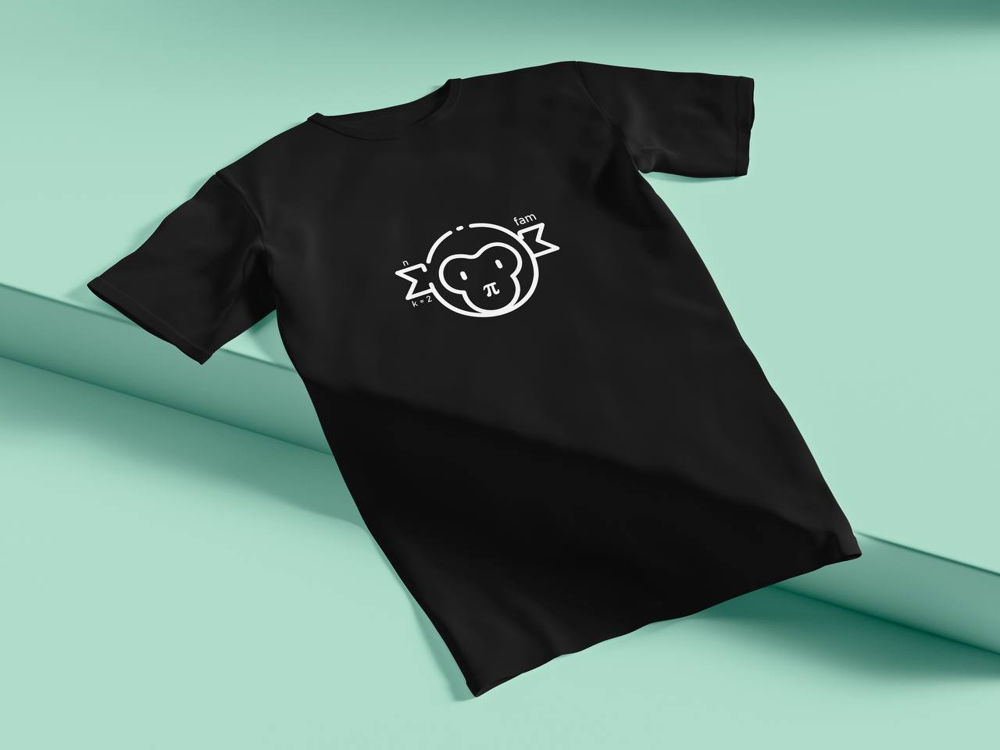
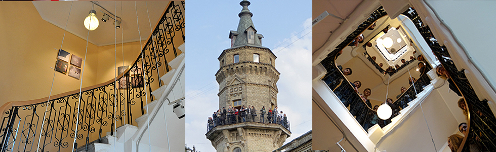
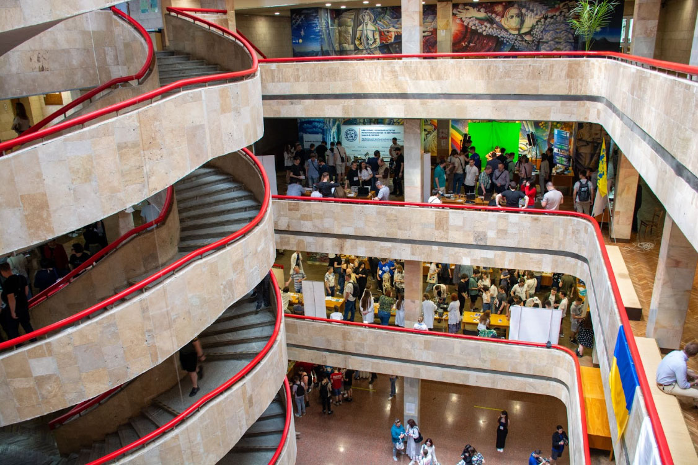
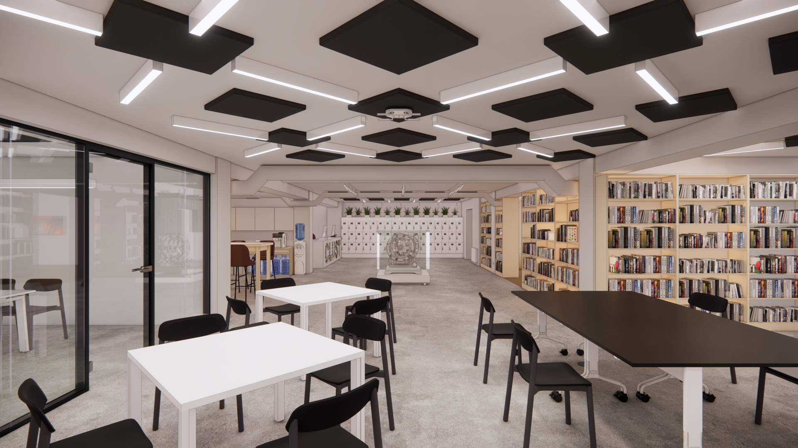
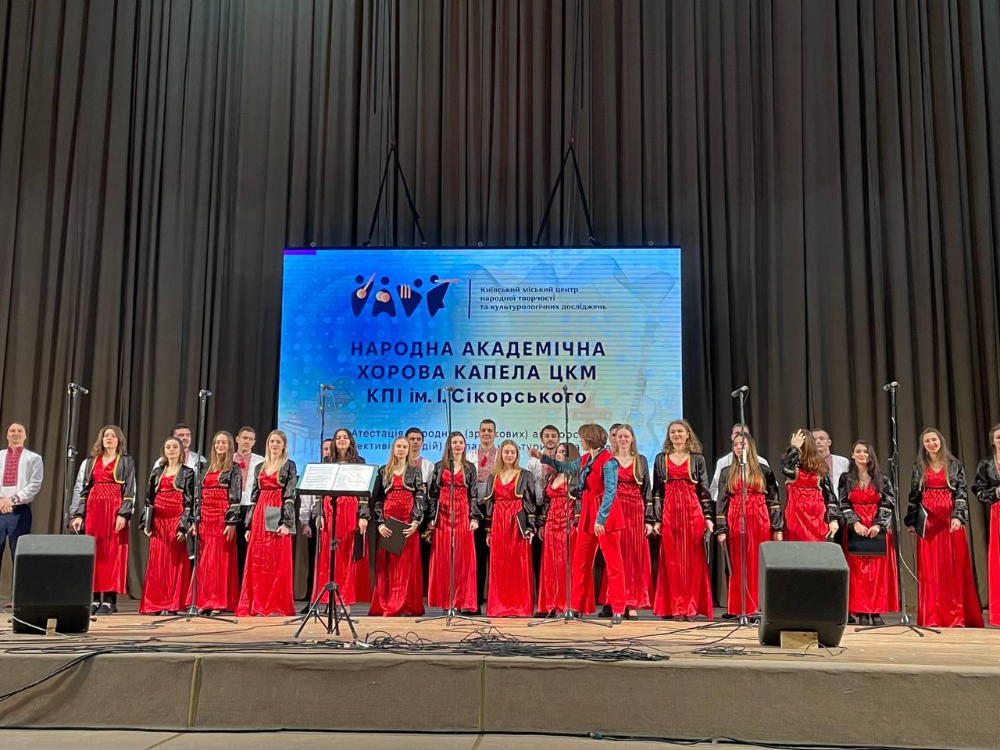
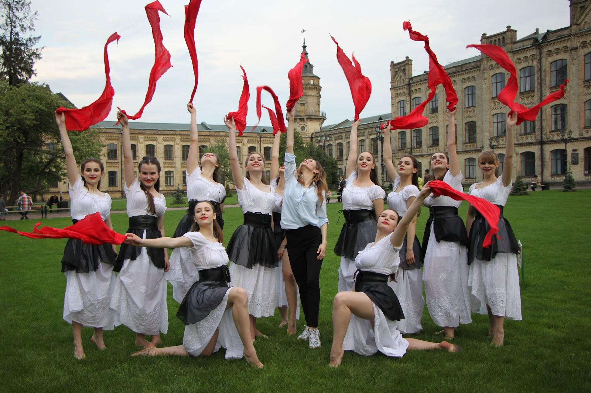

Спільнота ФПМ та КПІ#
«Я, як і більшість, при вступі орієнтувалась на якість навчання, яка звісно на вищому рівні. Але зараз погодилась би знов вступити лиш заради спільноти.»
Спершу розкажу про те, що маємо у нас на ФПМ:
Студрада#
Студрада - це об’єднання активних студентів, що працюють задля кращого життя всього факультету.
Робота йде у кількох напрямках:
Івенти 💃#
Місце познайомитись, відпочити та провести час у компанії однодумців)
Заходи на будь-який смак: перегляди фільмів, вечори настолок, вечірки та активний відпочинок на природі. Чудово об’єднує під час дистанційки 😉
P.S. ПОСВЯТА - це теж івент від СР🍻
Освіта 🤓#
Окрім того, що у нас чудові викладачі та актуальні навчальні програми, є група студентів, що допомагають з підготовкою до найважчих контролів. Вони й пишуть гайди, а ще готові відповісти на будь-яке питання та додатково пояснити вивчений матеріал.
Для зв’язку та виклику допомоги є відповідний бот!
Мерч 💅#
Будучи студентом кращого факультету хочеться якось продемонструвати це всім? Таке ми теж пропонуємо)
Будь стильним з ФПМ!

Студкуратори 👨👩👧👦#
Окрема організована група людей, що обирається студрадою. Це активні студенти старших курсів, що допомагають нашим першачкам адаптуватись до навчання. Організація студентів на рівні груп та потоків на їх плечах.
Дізнатись що очікувати від студкуратора можна у нашому гайді.
Посилання#
Наш інстаграм(дуже радимо підписатись!)
P.s. Ходять чутки, що якщо підписатися на інстаграм студради ФПМу, то 100% здаси зимову сесію і вийдеш на стипендію! (очікуйте розіграш мерчу серед підписників інстаграму)
Профбюро ФПМ#
Профбюро ФПМ тісно повʼязано із загальним профкомом КПІ!
Відповідно, наші активісти працюють на користь студентів не тільки ФПМу, а також і всього КПІ. Як це проявляється?
Ми:
Займаємося волонтерством(робимо подовжувачі антен для рацій, виготовляємо окопні свічки, збираємо продуктові набори на підприємстві Food Bank, проводимо збори коштів для потреб ЗСУ і тому подібне)
Організовуємо вечірки. Остання з яких була доволі масштабна за участі інших профбюро. Ми зібрали понад 500 студентів та провели неймовірну тусовку в Форсажі, а також зібрали понад 40 тисяч гривень на потреби військових.
Допомагаємо студентам з вирішенням спірних питань стосовно навчання та поселення в гуртожиток.
Живем активне соціальне життя, адже маємо можливість долучатися до життя профбюро наших колег у Львові та приїздити до них з візитом, брати участь на самітах для студентів з активною життєвою позицією.
Отже! До нас може долучитися будь-який студент ФПМ КПІ, який бажає удосконалювати свої соціальні навички та проживати студентське життя на повну!
Або ж просто звернутися за допомогою та гарантовано її отримати)
Голова профбюро ФПМ - саме сюди можна звертатись за допомогою
А тепер перейдемо до того, що відбувається на рівні всього університету:
ЗагальноКПІшні штуки#
1. Студрада КПІ#
Коротко кажучи, це те саме, що й студрада ФПМ (яка є незалежним підрозділом загальної студради), але вже з масштабом на весь КПІ. Відповідно вони також влаштовують івенти, допомагають студентсву та працюють на користь всього університету.
2. Профком студентів КПІ#
Окрім всього того, що вже згадано у пункті щодо профбюро ФПМ, профком студентів КПІ також висвітлює важливі новини КПІ.
А ще, під час масових відлючень світла, часто можна прийти профком і продовжити навчання (про таку можливість зазделегідь пишуть в їх тг-каналі).
3. Арт-простір «Вежа»#
«Вежа» — це арт-простір у лівій вежі головного корпусу КПІ.
Виставки картин та фотографій, літературні вечори, квартирники, перегляд фільмів та багато іншого, що відбувається тут з 2013 року і до сьогодення.
В робочий час доступний гарний оглядовий майданчик 😍
Зараз працюють лише під час івентів, тож слідкуйте за цим в їх тг-каналі.

4. Бібліотека + класт#
Бібліотека КПІ — це 14 000 м2 для навчання, дослідження, роботи, саморозвитку, спілкування та відпочинку. Тут є 10 читальних залів, 4 холи, студентський простір Belka, відкрита лабораторія електроніки Lampa. Простори є трьох видів (зелені, червоні, помаранчеві) — у них знайде собі місце і любитель працювати сам-на-сам у тиші, і шанувальник жвавої командної роботи. А ще по всій території бібліотеки є дуже швидкий Wi-fi!

Освітній простір CLUST Space – функціює в укритті бібліотеки!
Конференції, презентації, лекції, круглі столи, шахові турніри, майстер-класи, форуми, розмовні клуби тощо – все це в освітньому просторі CLUST Space ❤️
Також студенти КПІ можуть безкоштовно забронювати для себе кімнату з метою навчання, проведення зустрічі чи заходу (не розважального).
Крім цього, під час тривог простір функціонує, як укриття.
#
Гуртки#
1. Гуртки по всім факультетам.#
Сотні гуртків наукового, інженерного та соціогуманітарного спрямування, що доступні для кожного студента: Посилання.
2. Спортивні гуртки#
В КПІ є багато спортивних секцій, про які можна почитати в офіційному гайді.
Також є басейн, який студенти КПІ можуть відвідувати безкоштовно, про це у відповідному гайді.
А ще недалеко від університету є скеледром - КПІ скала.
3. Гуртки ЦКМ#
КПІшники не тільки розумні і круті, а ще й творчі! Саме тому в Центрі культури і мистецтв існують різні колективи танцю, співу та не тільки, що виступають на різних сценах Києву на України.
Детальніше за посиланням

